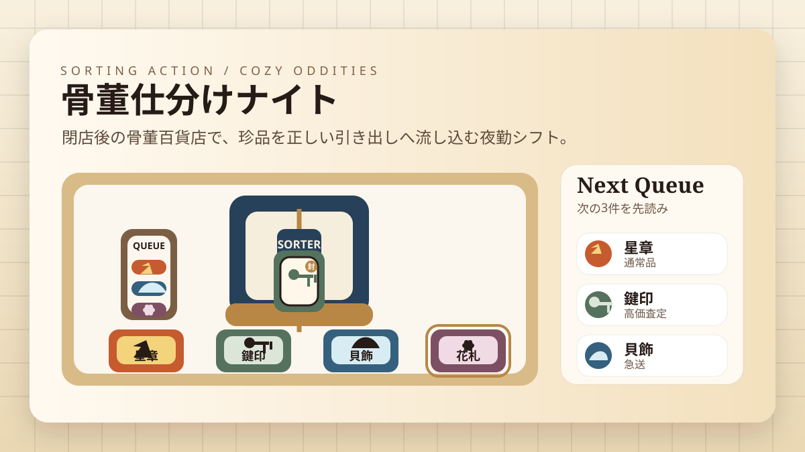
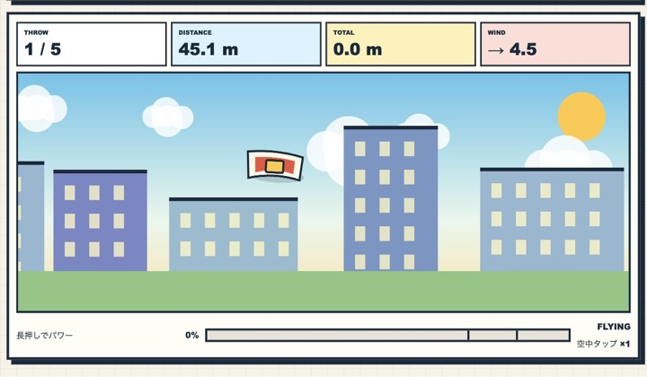
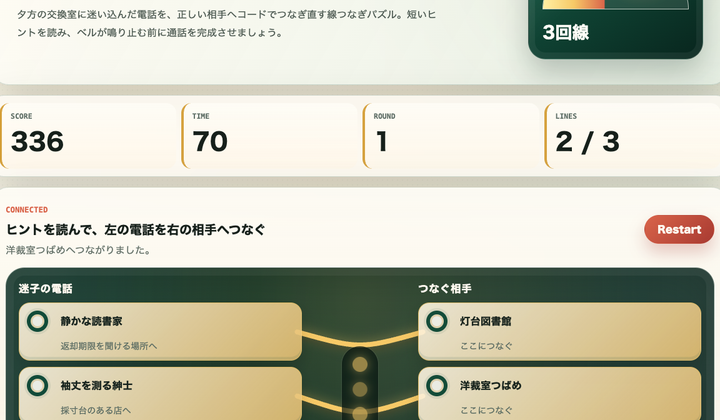
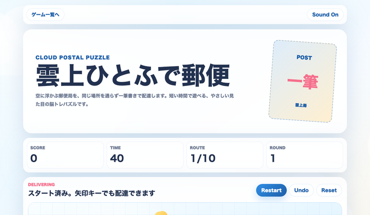

短時間で結果が出るゲームを中心に制作
1分前後で遊べるゲームや、休み時間に区切りよく終わるゲームを中心にしています。初見でもすぐ始められるルールを大切にしています。
無料ブラウザゲーム広場は、個人開発者が制作した短時間ブラウザゲームを、遊び方・攻略・制作意図つきで公開するサイトです。
1分前後で遊べるゲームや、休み時間に区切りよく終わるゲームを中心にしています。初見でもすぐ始められるルールを大切にしています。
ボタンの押しやすさ、テンポ、スコアバランスを確認しながら調整しています。不具合や改善要望はお問い合わせから受け付けています。
ルールが分かりやすく、短時間でも手応えが出やすいゲームを選んでいます。実際のプレイ導線や更新頻度を見ながら並べています。
最近追加した無料ブラウザゲームです。新しい入口ページにもつながるように、詳細ページを用意しています。

夜の骨董百貨店で珍品をその場で仕分ける、即判断型の仕分けアクション。
遊ぶ
屋上から布団を飛ばす一投型の物理アクション。
遊ぶ
迷子の電話を正しい相手へつなぐ線つなぎ脳トレ。
遊ぶ似た漢字の中から本物を見抜く60秒脳トレ。
遊ぶ
雲の郵便局を一筆書きで巡る40秒脳トレ。
遊ぶ
誤字をローマ字入力で封印する60秒タイピング。
遊ぶ
宇宙回転寿司で皿を増やす1分クリッカー。
遊ぶ
駅の発車標をテーマにした数字タップゲーム。
遊ぶ
夜祭りの絵柄を完成させるスライドパズル。
遊ぶ短時間で遊びやすい、初見でも分かりやすい、スマホ・PCで始めやすい、という編集基準で紹介しています。
無料ブラウザゲーム広場では、スマホで遊べる無料ゲーム、PC スマホ ブラウザゲーム、短時間で遊べるミニゲームを目的別に探せます。休み時間やスキマ時間のリフレッシュに向いた暇つぶしゲームも、各カテゴリからクロール可能なリンクで移動できます。
各ゲームの遊び方、操作方法、攻略のコツは個別ページで確認できます。